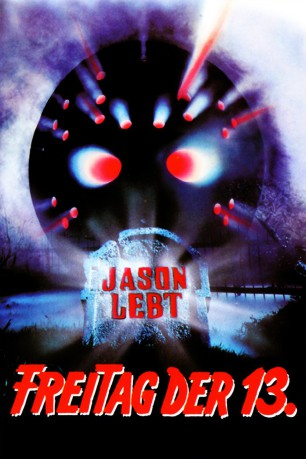

#4087 Freitag, der 13. - Teil 06 - Jason lebt
Alternativ: Jason Lives: Friday the 13th Part VI
 
 IMDB-Wertung: 5.9 / 10
IMDB-Wertung: 5.9 / 10  Metascore: 0
Metascore: 0 
Nach einer Mordserie, die ein Irrer Jason Voorhees in die Schuhe geschoben hat, will der Jugendliche Tommy Jarvis sicher gehen, dass Jason wirklich das Zeitliche gesegnet hat. Mit einem Freund gräbt er Jasons Grab aus. Der Leichnam wird von einem Blitz getroffen. Der zu neuem Leben erweckte Jason tötet zunächst Tommys Kumpel und setzt dann sein Morden fort. Tommy flieht in das Büro des Sheriffs, wo ihm niemand glaubt und er eingesperrt wird. Dabei ist er der Einzige, der Jason stoppen kann.
Jahr: 1986
Dauer: 83 Minuten
FSK: 18
Land: USA Studio: Paramount PicturesTonspuren: DD2.0 - ,
Untertitel:
Auflösung: 1080p (1920x1080) Größe: 7905 MB
Genre: Horror, Thriller
Regisseur:  Tom McLoughlin
Tom McLoughlin
Drehbuch: Simon Rumley
Soundtrack:
Darsteller:
 Thom Mathews als Tommy
Thom Mathews als Tommy- Renée Jones als Sissy
- C.J. Graham als Jason
- Darcy DeMoss als Nikki
 Vincent Guastaferro als Deputy Rick Cologne
Vincent Guastaferro als Deputy Rick Cologne Tony Goldwyn als Darren
Tony Goldwyn als Darren- Ron Palillo als Allen Hawes
 Alan Blumenfeld als Larry
Alan Blumenfeld als Larry Ann Ryerson als Katie
Ann Ryerson als Katie- Michael Swan als Officer Pappas
 Wallace Merck als Burt
Wallace Merck als Burt Roger Rose als Steven
Roger Rose als Steven- Cynthia Kania als Annette
 Kimberly Beck als Trish , archive footage, uncredited
Kimberly Beck als Trish , archive footage, uncredited Corey Feldman als Tommy , archive footage, uncredited
Corey Feldman als Tommy , archive footage, uncredited- Jennifer Cooke als Megan
- David Kagen als Sheriff Garris
- Kerry Noonan als Paula
- Tom Fridley als Cort
- Nancy McLoughlin als Lizbeth
 Matthew Faison als Stan
Matthew Faison als Stan- Whitney Rydbeck als Roy
- Courtney Vickery als Nancy
- Bob Larkin als Martin
- Mike Nomad als Thornton
- Thomas Nowell als Tyen
- Justin Nowell als Billy
- Sheri Levinsky als Bus Monitor
- Temi Epstein als Little Girl
- Taras O'Har als Little Boy
- Dan Bradley als Jason, Paintball Scene , uncredited
- Valentino Curati als Blind Man , uncredited
Datei: X:\FSK18-Collections\Freitag, der 13\Freitag, der 13. - Teil 06 - Jason lebt (1986, FSK18, 1920x1080).mkv seit 19.07.2016
Festplatte: FSK18
 Es gibt insgesamt 15 Filme in der Gruppe 'FSK18-Collections\Freitag, der 13'
Es gibt insgesamt 15 Filme in der Gruppe 'FSK18-Collections\Freitag, der 13'